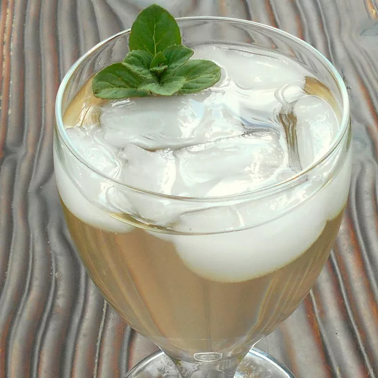

Back To Home
Sekanjabin

Description
Sekanjabin (sometimes spelled sekanjubin or sekanjamin, among others) is a refreshing Persian drink, sometimes even prepared for medicinal purposes. Earliest references to this concoction date from the 10th century AD. The syrup keeps almost indefinitely without refrigeration, and the drink is particularly tasty with fruits. Enjoy!
Ingredients
- 4 cups white sugar
- 2 ½ cups water
- 1 cup red or white wine vinegar
- ½ cup minced fresh ginger
Steps
- Boil the sugar and water together in a large saucepan over high heat for 2 to 3 minutes. Remove the pan from the heat, and stir in the vinegar and minced ginger.
- Allow mixture to cool to room temperature, then strain out the minced ginger with a fine sieve. Store at room temperature in a sterile container.
- To use, stir 1 part syrup into 4 to 5 parts water; serve cold with ice if desired.